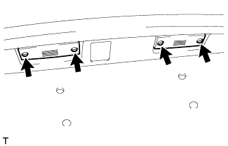

ЛАМПА ОСВЕЩЕНИЯ НОМЕРНОГО ЗНАКА В СБОРЕ (для моделей без кронштейна запасного колеса) > СНЯТИЕ |
| 1. СНИМИТЕ НАРУЖНУЮ НАКЛАДКУ ДВЕРИ БАГАЖНОГО ОТДЕЛЕНИЯ |
Снимите наружную накладку двери багажного отделения (Нажмите здесь).
| 2. СНИМИТЕ ЛАМПУ ОСВЕЩЕНИЯ НОМЕРНОГО ЗНАКА В СБОРЕ |
|  |
Отсоедините разъем.
Выверните 4 винта и снимите 2 лампы.
| 3. СИМИТЕ КОЛПАК ФОНАРЯ ОСВЕЩЕНИЯ НОМЕРНОГО ЗНАКА |
Снимите колпак.
| 4. СНИМИТЕ ПРОКЛАДКУ КОЛПАКА ЛАМПЫ ОСВЕЩЕНИЯ НОМЕРНОГО ЗНАКА |
Снимите прокладку.
| 5. СНИМИТЕ ЛАМПУ ОСВЕЩЕНИЯ НОМЕРНОГО ЗНАКА |
Снимите лампу.